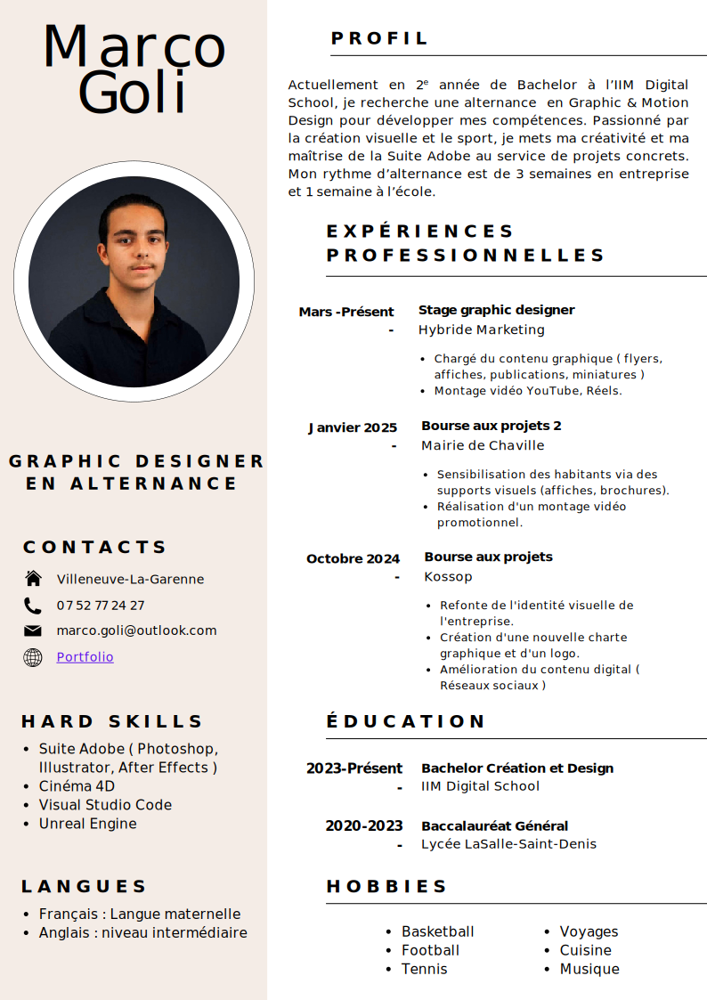

Bienvenue
sur mon portfolio
En recherche d'un stage de 2 à 4 mois.
Actuellement en deuxième année de Bachelor à l’IIM Digital School, je souhaite approfondir mes compétences en Graphic Design & Motion Design au sein d’une entreprise dynamique. Passionné par la création visuelle et le sport, je cherche un stage où je pourrai mettre à profit ma maîtrise de la Suite Adobe et ma créativité dans des projets concrets.
